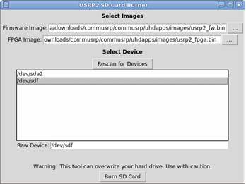
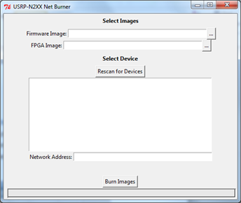
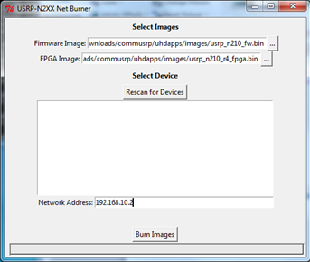
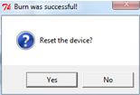

Update USRP® Radio Support Package Firmware
Downloading Firmware Update Tools
Communications System Toolbox Support Package for USRP® Radio
uses a specific version of the UHDTM software on the host computer
side. If the USRP® radio has a different version of UHDTM firmware
installed, you may not be able to communicate with the USRP® radio
and use the support package.
This section describes how to download the firmware update tools
and the Python™ software to use them, in these
topics:
Note that in all these instructions, <SDRuInstallRoot> is
the folder where you installed the Communications System Toolbox Support
Package for USRP® Radio. You can determine the name of this
folder by typing sdruroot in the MATLAB command
window. Make sure that the Support Package for USRP® Radio
has been configured for your current MATLAB session (see Verify MATLAB Connection to USRP® Radio).
If you get an unknown command error, click the Add SDRu shortcut
and try again.
Locate Update Scripts
Ettus ResearchTM provides tools to update USRP® radio firmware.
The tools are scripts run with the Python software.
These tools are downloaded as part of the USRP® Radio
Support Package, and you can find the scripts in the support package
folder EttusResearch-UHD-Mirror-ad12df0\host\utils or
similar.
Download and Install Python Software
To use the Python scripts you just downloaded, you must install
Python on the host computer. If you already have Python installed
on your computer, you can skip this step.
Go to http://www.python.org/download/.
Download and install the Python software.
After you have downloaded this software, select one of the following
update workflows:
Back to Top
Updating USRP2® Radio Firmware on Windows
From the MATLAB command prompt, navigate to the
directory where you downloaded the Python scripts.
Start the USRP2® card burner with the following
command in the MATLAB command window:
system('usrp2_card_burner_gui.py')The USRP2® SD Card Burner GUI starts.

Click the browse button next to the Firmware
Image text box. Navigate to the <SDRuInstallRoot>\uhdapps\images folder.
Select file usrp2_fw_bin.
Click the browse button next to the FPGA
Image text box. Navigate to the <SDRuInstallRoot>\uhdapps\images folder.
Select file usrp2_fpga_bin.
In the Select Device box, select
the SD card reader device on the host computer. The device list shown
in the GUI does not include disk partitions and devices too large
to be the SD card. Make sure you select the desired device.
In the following image example, the SD card reader is attached
to the g: drive.

Click Burn SD Card. When the
burn is completed, you will see a dialog with the burn status. Make
sure that the message says "Verification Passed".

Click OK. You can now insert
this SD card into the USRP® radio to use with the Communications System Toolbox Support
Package for USRP® Radio software.
Back to Top
Updating USRP2® Radio Firmware on Linux
From the MATLAB command prompt, navigate to the
folder where you downloaded the Python scripts (see Download and Install Python Software).
Start the USRP2® card burner with the following
command in the MATLAB command window:
system('sudo usrp2_card_burner_gui.py')Note: The first time you use the sudo command,
the OS may ask you to enter your password. If that happens, enter
your password to continue.
The USRP2® SD Card Burner GUI starts.

Click the browse button next to the Firmware
Image text box. Navigate to the <SDRuInstallRoot>\uhdapps\images folder.
Select file usrp2_fw_bin.
Click the browse button next to the FPGA
Image text box. Navigate to the <SDRuInstallRoot>\uhdapps\images folder.
Select file usrp2_fpga_bin.
In the Select Device box, select
the SD card reader device on the host computer. The device list shown
in the GUI does not include disk partitions and devices too large
to be the SD card. Make sure you select the desired device.
In the following image example, the SD card reader is attached
to the /dev/sdf drive.

Click Burn SD Card. When the
burn is completed, you will see a dialog with the burn status. Make
sure that the message says "Verification Passed".

Click OK. You can now insert
this SD card into the USRP® radio to use with the Communications System Toolbox Support
Package for USRP® Radio software.
Back to Top
Updating N210 Radio Firmware on Windows
Connect the N210 Radio to the host computer and configure
the host computer as described in Configure Host Computer.
In MATLAB, navigate to the folder where you downloaded
the Python scripts (see Download and Install Python Software).
Start the USRP-N2XX Net Burner with the following
command in the MATLAB command window:
system('usrp_n2xx_net_burner_gui.py')The USRP-N2XX Net Burner GUI starts.

Click the browse button next to the Firmware
Image text box. Navigate to the <SDRuInstallRoot>\uhdapps\images folder.
Select file usrp_n210_fw_bin.
Click the browse button next to the FPGA
Image text box. Navigate to the <SDRuInstallRoot>\uhdapps\images folder.
Select file usrp_n210_rX_fpga.bin,
where X is the rev number.
Select the N210 device on your host computer by typing
the IP address in the Network Address text box.
In the following example image, the N210 device is at IP Address 192.168.10.2.

Click Burn Images.
After the net burner verifies the firmware upgrade,
it displays the following dialog.

Click Yes. You have successfully updated
the firmware of your N210 device to use with the Communications System Toolbox Support
Package for USRP® Radio software.
Back to Top
Updating N210 Radio Firmware on Linux
Connect the N210 Radio to the host computer and configure
the host computer as described in Configure Host Computer.
In MATLAB, navigate to the folder where you downloaded
the Python scripts (see Download and Install Python Software).
Start the USRP-N2XX Net Burner with the following
command in the MATLAB command window:
system('sudo python ./usrp_n2xx_net_burner_gui.py') This command assumes that '.' is on PATH 2. It also assumes
that the .py script has execute permissions.
Alternatively, you must update execute permissions on the files
you copied or downloaded and then bring up the GUI, for example:
>> system('chmod +x *.py')
>> system('sudo ./usrp_n2xx_net_burner_gui.py') The USRP-N2XX Net Burner GUI starts.

Click the browse button next to the Firmware
Image text box. Navigate to the <SDRuInstallRoot>\uhdapps\images folder.
Select file usrp_n210_fw_bin.
Click the browse button next to the FPGA
Image text box. Navigate to the <SDRuInstallRoot>\uhdapps\images folder.
Select fileusrp_n210_rX_fpga.bin,
where X is the rev number.
Select the N210 device on the host computer by clicking
its IP address in the listed devices. In the following example image,
the N210 device is at 192.168.10.2.

Click Burn Images.
After the net burner verifies the firmware upgrade,
it displays the following dialog.

Click Yes. You have successfully updated
the firmware of your N210 device to use with the Communications System Toolbox Support
Package for USRP® Radio software.
Back to Top
 | Communications System Toolbox Support Package for USRP® Radio |
USRP, UHD, and Ettus Research are trademarks of National Instruments Corp.
© 1984-2013 The MathWorks, Inc.
•
Patents
•
Trademarks
•
Privacy Policy
•
Preventing Piracy